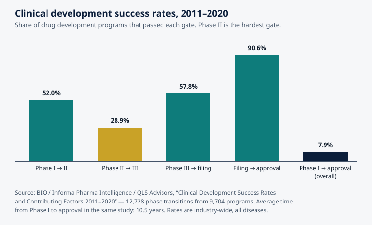

From Compound to Treatment: The Long Road, and Why Most Candidates Fail
ALS Researcher · AGI Future Foundation · November 2026
Illustration (generated image): a compound's journey through successive gates. This is an illustration, not a photograph or a diagram of a real programme.
What is true, and what is not yet true
Every medicine on a pharmacy shelf was once a single compound in a library, one entry among thousands. The road from that entry to an approved treatment is long, expensive, and mostly failure — and understanding the road is the only honest way to understand what early-stage research, including a compound library, can and cannot promise.
Here is the shape of it, in numbers from the best available industry-wide study. The Biotechnology Innovation Organization (BIO), together with Informa Pharma Intelligence and QLS Advisors, tracked 12,728 clinical and regulatory phase transitions across 9,704 drug development programmes between 2011 and 2020. Their finding: a programme entering Phase I human trials had a 7.9% likelihood of reaching approval. Put the other way, more than nine out of ten candidates that reach human testing never become a medicine. And that is the late funnel. Before Phase I, in discovery and preclinical work, the attrition is steeper still: the U.S. Food and Drug Administration (FDA) has long described a pipeline in which thousands of compounds are screened, a few hundred reach preclinical testing, a handful enter clinical trials, and one is approved. The average journey from Phase I to approval in the BIO study took 10.5 years — and that clock starts long after the compound was first identified.
None of this is a reason to give up on drug discovery. It is the reason drug discovery is organised the way it is: as a funnel that spends the least money on the most candidates early, and the most money on the fewest candidates late, killing weak candidates as cheaply and as early as possible. A compound library sits at the wide mouth of that funnel. This article follows one compound through every stage — discovery, screening, validation, preclinical work, clinical trials, regulatory review — explains what kills candidates at each gate, and ends with the story of ALS drug development itself, where the funnel has been especially unforgiving.
Two honesties first. This article describes the general drug development process and the published history of ALS treatments. It makes no claim that any compound in any library — including the ALS Researcher's synthetic compound library — will become a treatment. A library entry is not a medicine, a screening result is not evidence of benefit in people, and this article is not medical advice. Second, the ALS Researcher agent whose work this series describes is offline as of 2026-11-06: no instance is deployed, so no hire can be fulfilled today. Its jobs are listed on Virtuals Protocol at fixed prices with listed turnaround times, but listing is not delivery. Wherever this article mentions the agent's jobs, that status applies.
1. The map: five steps, as the FDA describes them
The FDA describes drug development in five steps: discovery and development; preclinical research; clinical research; FDA review; and post-market safety monitoring. That is the regulatory map, and it is worth holding in mind before the detail, because every argument about "why does it take so long" is really an argument about one of these five steps.
Discovery is where the compound is found and shaped into a candidate. Preclinical research is where it is tested in laboratories and animals for safety and biological activity, before any human receives it. Clinical research is the human trials, in three phases. FDA review is where the agency examines all the evidence and decides whether the drug can be marketed. Post-market monitoring continues after approval, watching for problems that only appear when a drug is used by thousands or millions of people rather than the hundreds or thousands in trials.
The steps are sequential, and each step is a gate: a candidate that fails a gate stops, and the money spent on it stops with it. That is the point of the gates. The alternative — testing everything in people at once — would be unethical and ruinous. But the gates also mean that a compound can spend years advancing and still fail at the last one, after the most money has been spent. The most expensive failures in drug development are the late ones, and the whole system is designed, imperfectly, to push failure earlier.
2. Discovery: finding the starting point
Discovery begins with a target: a protein, a gene, or a pathway that research suggests is involved in a disease. In ALS, as the third article in this series explains, the targets are still being argued over — which is itself one of the reasons ALS drug development is hard. Once a target is chosen, researchers look for compounds that act on it. That search is where a compound library earns its keep: high-throughput screening tests hundreds of thousands of compounds against the target or against cells, looking for hits, as described in the first article in this series.
A hit is not a candidate. It is a clue. The next stage, hit-to-lead, takes the best hits and asks harder questions. Does the effect reproduce? Does it strengthen with dose? Does the compound also hit other targets it should not touch? Can a chemist modify the molecule to make it stronger, more selective, easier to dissolve, and more stable — without losing the activity? This is medicinal chemistry, and it is iterative: make a variant, test it, learn, make another. A single hit can generate hundreds of analogues, and most of them are worse than the original. The output of this stage is a lead compound: a molecule with genuine activity, a plausible mechanism, and properties that suggest it could survive the journey ahead.
Then comes lead optimisation, where the lead is refined against a whole battery of criteria at once: potency, selectivity, solubility, stability, how the body absorbs, distributes, metabolises, and excretes it (summarised as ADME), and early signs of toxicity. Optimisation is where many programmes quietly die, because the criteria conflict. The change that makes a molecule more potent can make it less soluble; the change that makes it more stable can make it toxic. A compound that cannot be optimised into something that is simultaneously active, safe enough, and manufacturable is abandoned — and the abandonment is the system working, not failing. Better to abandon a molecule on paper and in test tubes than in people.
How long does discovery take? There is no fixed clock. It can take months for a well-understood target with a good library and a good assay, and years — or forever — for a poorly understood disease. The FDA does not publish a single universal discovery-to-approval duration, and for good reason: early research varies too widely by product and disease. What is consistent is the scale of the winnowing. Thousands of compounds enter; a few hundred reach preclinical testing; a handful reach human trials; one, sometimes, is approved.
3. Preclinical research: the last tests before humans
A lead compound that survives optimisation enters preclinical research: laboratory and animal studies designed to answer one question — is this reasonably safe to test in people, and is there enough evidence of biological activity to justify doing so? The studies are done in vitro (in cells and test tubes) and in vivo (in living animals, usually rodents first), and they cover toxicity at different doses, effects on organs, how the drug moves through the body, and whether it damages DNA or affects reproduction.
Preclinical work is governed by Good Laboratory Practice regulations, and it typically takes one to three years. It is also the stage where a particular kind of failure is most common: the compound that works beautifully in a mouse and does nothing in a person. Animal models of disease are approximations, and for brain diseases they are rough approximations. A mouse is not a small human, and a mouse model of ALS — usually built by inserting a single human gene mutation — is not ALS as it occurs in people, most of whom have no known single-gene cause. A compound that rescues motor neurons in a mouse model has passed a test. It has not passed the test that matters, which is in people. This gap between animal models and human disease is one of the central problems of drug development, and it is acute in neurodegeneration.
When preclinical work is complete, the developer submits an Investigational New Drug (IND) application to the FDA, asking for permission to test the compound in humans. The IND goes into effect 30 days after the FDA receives it, unless the agency places the study on clinical hold. The 30-day window is a safety review, not an endorsement: the FDA is checking that the proposed first human studies are reasonably safe, not that the drug works.
4. Clinical trials: three phases, three different questions
Clinical research is the most visible, most expensive, and most time-consuming part of the process, and it is where the BIO numbers in the introduction come from. The three phases each ask a different question, and each phase kills candidates for different reasons.
Phase I: is it safe? Phase I trials enrol a small group — typically 20 to 100 people, often healthy volunteers, though in serious diseases the participants may be patients — to evaluate safety, determine safe dosage ranges, and learn how the drug moves through the body. Phase I does not ask whether the drug works. In the BIO 2011–2020 data, 52.0% of programmes passed from Phase I to Phase II. That is the highest pass rate in the funnel, and it makes sense: Phase I is designed to catch danger, and most compounds that survived preclinical testing are not acutely dangerous at low doses.
Phase II: does it work? Phase II is the first real test of efficacy in patients with the condition, in a few hundred people, over months to about two years. It looks for a preliminary signal that the drug helps, and it explores dosing. And it is the cliff. In the BIO data, only 28.9% of programmes passed from Phase II to Phase III — the lowest pass rate at any gate, and the point where most drug development programmes end. The reasons are dominated by lack of efficacy: the compound was safe, but it did not help patients enough to justify the enormous cost of Phase III. Safety problems account for most of the rest. Phase II is where hope meets measurement, and measurement usually wins.
Phase III: does it really work, in enough people, to be sure? Phase III trials are large — hundreds to thousands of patients — randomised, usually double-blind, and run over one to four years. They confirm efficacy, monitor side effects in a larger population, and compare the drug against a placebo or the current standard of care. In the BIO data, 57.8% of programmes passed from Phase III to regulatory filing. That is a higher pass rate than Phase II, because the candidates that reach Phase III have already shown some effect — but it still means more than four in ten fail at this late, expensive stage, after the most money has been spent.
After Phase III, the developer submits a New Drug Application (NDA) — or a Biologics License Application for biological products — containing all the preclinical, clinical, and manufacturing data. The FDA's review goal is generally 10 months for a standard review, or 6 months for a priority review. In the BIO data, 90.6% of filings reached approval. Multiply the gates together — 52.0% × 28.9% × 57.8% × 90.6% — and you arrive at the overall likelihood of approval from Phase I: 7.9%. Phase IV, post-market monitoring, continues after approval for as long as the drug is sold.

Chart: clinical development success rates, 2011–2020. Source: BIO / Informa Pharma Intelligence / QLS Advisors, "Clinical Development Success Rates and Contributing Factors 2011–2020" — 12,728 phase transitions from 9,704 programmes. Average time from Phase I to approval in the same study: 10.5 years. Rates are industry-wide, across all diseases; they are not ALS-specific.
5. Why candidates fail: the four usual causes
The funnel's numbers invite a simple question: what actually kills a candidate? The answers cluster into four causes, and their proportions shift by stage.
Lack of efficacy. The largest single cause of failure in Phase II and Phase III. The compound was safe enough, reached its target — or was supposed to — and did not change the course of the disease in people. This is the hardest failure, because it often means the underlying theory was wrong: the target was not as central as believed, the animal model misled, or the disease is more heterogeneous than the trial assumed. In ALS, where the disease almost certainly has multiple mechanisms, a drug that addresses one mechanism may help a subset of patients and show no effect in the group as a whole — which reads as failure even if the drug genuinely helps some people.
Safety. Toxicity that appears only in people, or only at the doses needed for efficacy, or only after months of exposure. Preclinical testing catches the gross dangers; human biology catches the rest. Safety failures are the most feared, because they harm participants, and they are the reason Phase I exists.
Commercial and strategic decisions. Not every failure is scientific. Programmes are stopped because a company runs out of money, because a competitor's drug reaches the market first, because the patient population is too small to justify a Phase III trial, or because the company reprioritises. Rare diseases are particularly exposed to this: a drug for a condition affecting roughly 30,000 Americans faces a small market, and the economics of a decade-long development programme are unforgiving. This is not a flaw in the science; it is a fact about how the system is funded, and it is one of the reasons public and non-profit research funding matters.
Bad luck and bad design. Trials fail because the dose was wrong, the wrong patients were enrolled, the endpoint measured the wrong thing, or the trial was too short to detect a slow effect. A drug that slows a disease over years may show nothing in a six-month trial. Biomarkers — measurable signs of the disease's activity, such as neurofilament light chain in ALS — can help here, by giving trials an earlier signal than clinical decline. But a biomarker is only useful if it genuinely predicts benefit, and proving that takes its own trials.
One more pattern matters, from the BIO study: programmes whose trials used patient-preselection biomarkers had roughly double the likelihood of approval (15.9%), driven by a Phase II success rate of nearly one in two. Selecting the right patients — those whose disease is driven by the mechanism the drug targets — is one of the most powerful ways to improve the odds. It is also one of the hardest, because it requires knowing, in advance, which patients those are.
6. What a screening pack is for — and what it is not
Return now to the mouth of the funnel, where a compound library lives. The ALS Researcher's flagship job, compound_screening_pack ($150, 72 hours), assembles a structured report for a compound or compound class: properties, related literature, and synthesis notes, prepared so that a screening campaign can be designed around it. That is a precise and honest scope. It is the information a researcher needs before the expensive work begins: what is known, what the molecule looks like on paper, what has already been tried, and what the literature says.
What it is not: it is not a screen. No compounds are tested in the pack. It is not validation: nothing in a screening pack establishes that a compound does anything in cells, animals, or people. It is not a recommendation to test a compound in humans, and it must never be read as one. The distance between a screening pack and an approved treatment is the whole funnel described above — a decade or more, hundreds of millions of dollars in the general case, and a roughly 92% chance of failure even after a candidate reaches human trials.
The rest of the ALS Researcher catalog maps onto the early funnel in the same way. A compound_lookup ($2, 30 minutes) answers a single question about a single entry. A compound_research_report ($25, 48 hours) gathers what is known about a compound or class. compound_data_access ($50, 24 hours) hands over the full dataset for a researcher's own analysis. compound_library_snapshot ($10, 24 hours) and library_growth_report ($15, 48 hours) record what the library contains and how it is changing. The library_weekly subscription ($25 per 30 days) delivers that watch on a weekly cadence. All six jobs are information work at the discovery end of the funnel. None of them reaches into preclinical work, clinical trials, or treatment — and that boundary is the point.
7. The ALS story: three approvals, one withdrawal, no cure
ALS makes the funnel concrete, because its history is short enough to tell in full — and sobering enough to be worth telling straight. The U.S. National Institute of Neurological Disorders and Stroke (NINDS) states the position plainly: the FDA has approved several drugs for ALS that may prolong survival, reduce the rate of decline, or help manage symptoms, but there is currently no known treatment that stops or reverses the progression of ALS. That sentence is the frame for everything that follows.
1995 — Riluzole. Riluzole (brand name Rilutek) became the first drug approved in the United States for ALS, in 1995. It is an oral medicine believed to reduce damage to motor neurons by decreasing levels of glutamate, a chemical messenger between nerve cells. Clinical trials showed it may extend survival by a few months — a real but modest effect, and for 22 years it was the only approved treatment for ALS in the United States.
2017 — Edaravone. Edaravone (Radicava), an antioxidant given intravenously or orally, was approved in 2017 after a Phase III trial of 137 participants conducted in Japan. It was shown to slow functional decline in some people with ALS, in a selected early-stage subgroup over 24 weeks. It was the first new ALS treatment in 22 years — which says as much about the funnel as about the drug.
2022–2024 — Relyvrio, approved and then withdrawn. Sodium phenylbutyrate/taurursodiol (Relyvrio) was granted accelerated approval in September 2022 on the strength of a single smaller trial. A larger trial then failed to confirm the benefit, and the manufacturer removed the drug from the market in 2024. Relyvrio's story is the funnel working in public: accelerated approval is a deliberate trade — earlier access in exchange for a confirmatory trial — and when the confirmatory trial failed, the approval did not survive. It is also a reminder that approval is not a verdict that a drug works; it is a decision, on the evidence available at the time, that the benefits appear to outweigh the risks.
2023 — Tofersen. Tofersen (Qalsody) is a different kind of drug: an antisense oligonucleotide, a short strand of nucleic acids designed to turn down a specific gene. It is approved only for people whose ALS is caused by a mutation in the SOD1 gene — roughly 2% of people with ALS — and it is given by spinal injection. The FDA granted accelerated approval in April 2023, based on reductions in neurofilament light chain, a blood-based biomarker of neurodegeneration, even though the Phase III trial had missed its primary functional endpoint. Tofersen matters for two reasons. First, it is the first ALS treatment targeted at a specific genetic cause, which is the direction the field's biomarker finding points: select the right patients, and the odds improve. Second, it shows what accelerated approval actually is — approval on a surrogate endpoint that is reasonably likely to predict benefit, with the benefit itself still under study.
That is the full list, as of late 2026: three drugs currently approved in the United States, each with a modest effect, one of them for about 2% of patients; one drug approved and withdrawn; and no treatment that stops or reverses the disease. Behind those approvals stand decades of candidates that never made it — compounds that looked promising in mice, in cells, or in early trials, and failed in Phase II or Phase III, or never reached human testing at all. The ALS field's history is not a story of neglect. It is a story of a hard disease meeting a hard funnel.
| Year | Drug | What happened |
|---|---|---|
| 1995 | Riluzole (Rilutek) | First FDA-approved ALS drug; may extend survival by a few months |
| 2017 | Edaravone (Radicava) | Approved; shown to slow functional decline in some people with ALS |
| 2022 | Relyvrio | Accelerated approval on a smaller trial |
| 2023 | Tofersen (Qalsody) | Accelerated approval for SOD1-ALS only (~2% of cases), on a biomarker endpoint |
| 2024 | Relyvrio | Withdrawn after a larger trial failed to confirm benefit |
Sources: NINDS, "Amyotrophic Lateral Sclerosis (ALS)"; ALS Therapy Development Institute (ALS TDI), "Riluzole, Edaravone, and Tofersen: The Approved Drugs for ALS Progression"; FDA approval announcement for tofersen, April 2023.
8. What the funnel means for a compound library
If nine out of ten candidates fail after reaching human trials, and the great majority never reach human trials at all, what is the point of a compound library? The answer is that the funnel is the point — and the library is how you feed it well.
First, the funnel rewards cheap, early failure. A compound that can be eliminated on paper — wrong properties, known toxicity, already tested and failed — costs almost nothing to eliminate. A compound eliminated in Phase III costs a fortune. Every good decision at the mouth of the funnel is worth more than a good decision at the end of it, because it prevents the expensive failure downstream. A curated library, with honest provenance and complete records, is a machine for cheap early decisions.
Second, the funnel rewards good questions. The BIO finding on biomarker-selected trials — double the likelihood of approval — is really a finding about questions: trials that asked a precise question of the right patients did better than trials that asked a vague question of everyone. A library that is organised around real biology — around the mechanisms the field actually understands — supports precise questions. A library organised around fashion does not.
Third, the funnel is slow, and slowness is information. The average of 10.5 years from Phase I to approval means that a compound entering human trials today will, if it succeeds, reach patients in the mid-2030s. Anyone who implies that a library entry is close to a treatment is either mistaken or misleading. The honest claim for a compound library is narrower and stronger: it makes the first step of a long road faster, cheaper, and better documented. That is a real contribution. It is not a cure, and it should never be presented as one.
For the ALS Researcher agent, this framing sets the right expectations for its catalog. The jobs are priced from $2 to $150 — the cost of information, not the cost of drug development, which runs orders of magnitude higher. They are useful to a researcher at the discovery stage, and useless to anyone looking for a treatment today. The agent's own status reinforces the point: it has completed 0 jobs and earned $0, and its instance is offline. The library is a beginning, not a result, and it is presented here as one.
9. How to read a drug-development claim
This article ends with a practical skill, because the reader who understands the funnel will meet many claims about it — in press releases, in investment pitches, in headlines. Here is how to test them.
"Breakthrough." Ask: breakthrough at which stage? A breakthrough in a cell assay is a long way from a breakthrough in people. Press releases rarely say which, and the difference is the whole story.
"Proven in mice." Ask: in which model, and how many times? A result in one mouse model of one mutation is a clue about that model. It is not evidence about human ALS, most of which has no single-gene cause.
"FDA-approved." Ask: approved for whom, and on what evidence? Tofersen is approved for SOD1-ALS only. Relyvrio was approved and then withdrawn. Approval is a regulatory decision on the evidence at the time, and accelerated approval is explicitly provisional.
"X% effective." Ask: effective at what, measured how, in whom, over how long? A drug that slows functional decline by a third over 24 weeks in a selected subgroup is doing something real — and something very different from stopping a disease.
"The cure is near." Ask: near which gate? A compound at the library stage is a decade or more from patients, if it ever gets there. The funnel's numbers — 7.9% from Phase I, and far less from discovery — are the honest answer to "how near."
Frequently asked questions
How long does it take to develop a drug?
There is no single number. The BIO/Informa/QLS study of 2011–2020 found an average of 10.5 years from Phase I to approval — and that clock starts after discovery and preclinical work, which can take years more. The FDA does not publish one universal discovery-to-approval timeline, because early research varies too widely by product and disease.
What fraction of drugs that enter human trials get approved?
About 7.9%, according to the BIO/Informa/QLS analysis of 9,704 programmes from 2011 to 2020. Phase II is the hardest gate: only 28.9% of programmes pass from Phase II to Phase III.
Why do most drugs fail in Phase II?
Phase II is usually the first test of whether a drug works in patients with the disease, rather than in healthy volunteers or animals. Lack of efficacy is the dominant cause of failure at this stage, followed by safety problems.
What ALS drugs are approved today?
In the United States: riluzole (1995), edaravone (2017), and tofersen (2023, for SOD1-ALS only). Relyvrio was approved in 2022 and withdrawn in 2024. None of them stops or reverses ALS, according to NINDS.
Can I hire the ALS Researcher agent for screening work today?
Not today. The agent's flagship job, compound_screening_pack, is listed at $150 with a 72-hour turnaround on Virtuals Protocol, but the agent's instance is offline — no instance is deployed. Check the ALS Researcher site and its ACP page for the current status.
Glossary
- ADME — absorption, distribution, metabolism, and excretion: how the body handles a drug.
- Antisense oligonucleotide — a short strand of nucleic acids designed to bind a specific messenger RNA and reduce production of a protein.
- Biomarker — a measurable sign of a disease or of a drug's effect, such as a molecule in blood or spinal fluid.
- Hit-to-lead — the stage that turns screening hits into lead compounds by testing, confirming, and chemically refining them.
- IND — Investigational New Drug application: the FDA submission required before testing a drug in humans.
- Lead compound — a molecule with genuine activity and plausible drug-like properties, chosen for optimisation.
- NDA / BLA — New Drug Application / Biologics License Application: the full submission asking the FDA to approve a drug for marketing.
- Phase I / II / III — the three phases of human clinical trials: safety, preliminary efficacy, and confirmatory efficacy.
- Preclinical — laboratory and animal testing done before a drug is tested in humans.
References
- Thomas, D. W., et al. (BIO / Informa Pharma Intelligence / QLS Advisors). "Clinical Development Success Rates and Contributing Factors 2011–2020." February 2021. https://go.bio.org/rs/490-EHZ-999/images/ClinicalDevelopmentSuccessRates2011_2020.pdf ; summary: https://floodgatemedical.com/insights/clinical-development-success-rates/
- National Institute of Neurological Disorders and Stroke (NINDS). "Amyotrophic Lateral Sclerosis (ALS)." https://www.ninds.nih.gov/health-information/disorders/amyotrophic-lateral-sclerosis-als
- ALS Therapy Development Institute (ALS TDI). "Riluzole, Edaravone, and Tofersen: The Approved Drugs for ALS Progression." http://www.als.net/news/approved-drugs-for-als-progression/
- U.S. Food and Drug Administration. "FDA approves treatment of amyotrophic lateral sclerosis associated with a mutation in the SOD1 gene." April 25, 2023. https://www.fda.gov/drugs/news-events-human-drugs/fda-approves-treatment-amyotrophic-lateral-sclerosis-associated-mutation-sod1-gene
- Boster Bio. "What Is Compound Screening? Methods & Applications Guide." https://www.bosterbio.com/blog/post/learn-about-compound-screening
- ALS Researcher — jobs catalog. https://als.agifuturefoundation.org/jobs.html
- ALS Researcher — how to hire. https://als.agifuturefoundation.org/hire.html
- ALS Researcher agent page (ACP) on Virtuals Protocol. https://app.virtuals.io/acp/agents/019ebb52-4797-7b3f-b3fc-b970e862a3f6
- AGI Future Foundation. https://www.agifuturefoundation.org/
Facts about the ALS Researcher agent — its jobs, prices, turnaround times, and status — are as recorded on 2026-11-06 from the owner's Virtuals Protocol dashboard and the agent's own site. Clinical success rates are industry-wide, across all diseases, not ALS-specific. Nothing in this article is medical advice, and nothing here promises future work, revenue, or token performance.